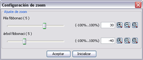

La aplicación permite ajustar el tamaño al que se muestran los datos en el árbol recursivo de la visualización.
|
Para ello, basta activar la opción Configuración / Configuración de Zoom. La aplicación nos ofrecerá la posibilidad de graduar, por separado, el zoom que queremos ejercer sobre las visualizaciones disponibles. A medida que se vaya graduando el zoom con la barra deslizante, se podrá ir viendo el tamaño que toman las celdas y los datos que contienen. Si se desea retirar el efecto de zoom sobre la visualización, basta pulsar el botón "Resetear" y los valores de zoom se vuelven 0 para mostrar la visualización en su tamaño y proporción original. |
 |
A la derecha, aparecen tres botones que permiten aumentar y disminuir en un cinco por ciento el tamaño del grafo correspondiente. El tercer botón ajusta el tamaño del grafo al tamaño del panel.
Una vez que el tamaño de las celdas se ajusta a las necesidades, se puede pulsar el botón "Aceptar" para cerrar el cuadro de diálogo.
La barra de herramientas también da acceso aalgunas de las funcionalidades del zoom.
Por otra parte, el visor de navegación permite contextualizar la parte del árbol que estamos viendo en la vista, permitiéndonos además acceder cómodamente a cualquier otra parte del árbol. Así, bastará con mover el visor de la vista global (mediante arrastre de ratón) o bien apuntar con el ratón el lugar en el que queremos que se sitúe dicho visor.
El visor aparecerá en la ventana siempre que así lo hayamos escogido en la opción Visualización / Mostrar visor de navegación.
__________